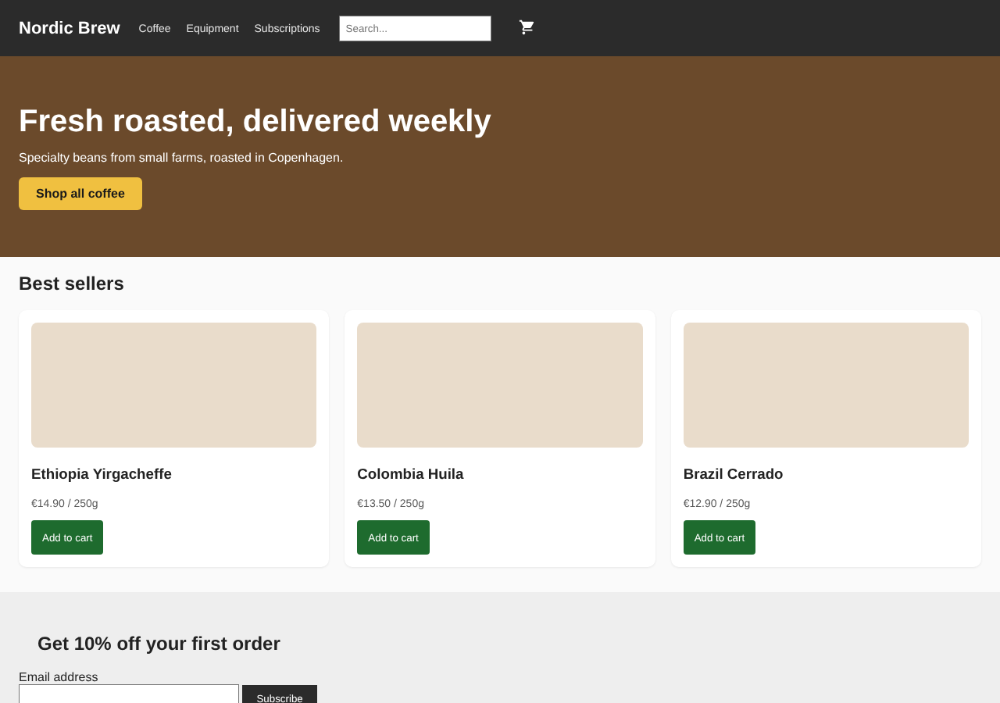

Accessibility Audit Report
Executive summary
Score100/100
Pages tested1
Issues found0
critical0
serious0
moderate0
minor0
Issues are ordered by impact. Critical and serious issues block or seriously hinder users of screen readers, keyboards or low-vision settings and should be fixed first.
Findings by page
Nordic Brew — Specialty Coffee Shop

No automated violations found on this page.
Methodology & limitations
Automated testing with axe-core 4.14.1 in Chromium against WCAG 2.0/2.1/2.2 A and AA rules.
Automated tools detect only part of all accessibility barriers; items flagged as "need manual review" and checks such as
keyboard navigation order, focus visibility, screen reader announcements and content meaning require manual testing.
This report is a technical assessment, not a legal certification of compliance.